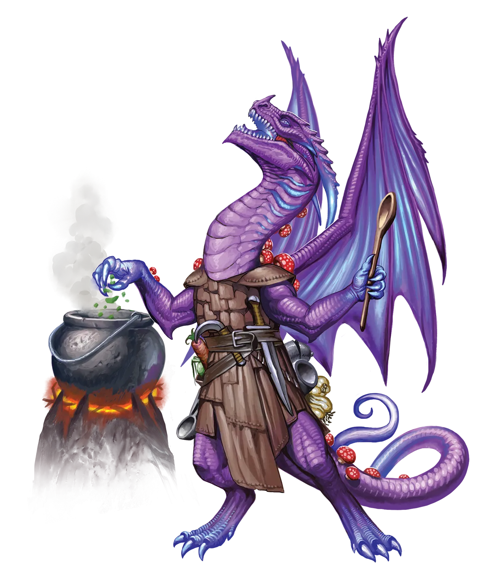
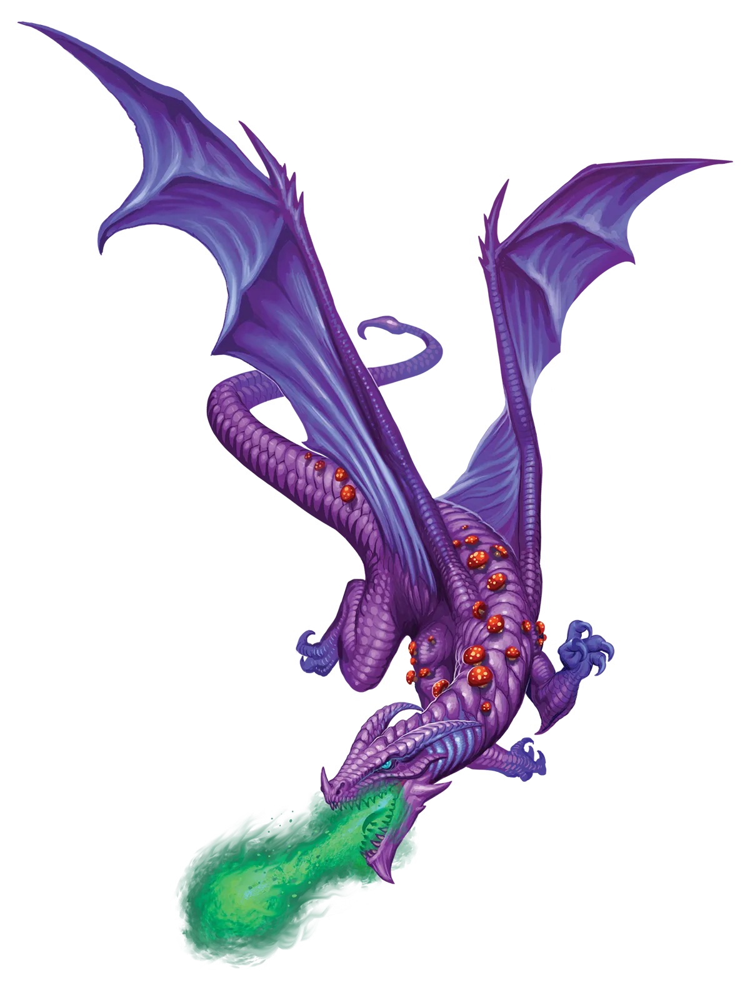

发酵还是腐烂？
即使与其他龙类相比，伞菌龙也拥有极其扩展的味觉，使它们能够分析和享受即使其他龙类闻到或尝到也会作呕的餐食，这并非没有道理。它们的消化方式不同，更像真菌和龙类的混合体。不过，它们有足够的知识分辨区别。虽然伞菌龙可能喜欢饮用发霉的大麦和杜松子酿造的补剂，但它们会告诉你我不喜欢，因此它们会为我们奉上精心调制的杜松子风味美味烈酒。
毒蕈龙 Toadstool Dragon |
|
|
生物光伞菌龙是矛盾的研究对象。一方面，它们是完美的美食家，作为烹饪天才和发酵大师闻名于世。另一方面，它们却钟爱腐烂和分解的食物，这些对其他生物而言会致病的“美味佳肴”。这一矛盾的根源在于它们增强的味觉。伞菌龙不仅用舌头品尝，还通过延伸至庞大菌丝网络的菌丝来感知，使它们能够分辨比其他生物，包括其他龙类，更广泛的味觉调色板。凭借数个世纪以来收集的知识，伞菌龙记录了哪些味道会让其他种族反感，从而能烹饪出连最挑剔的食客都惊叹的菜肴。 虽然许多其他龙类过着相对独居的生活，满足于在偏远的巢穴中与财宝为伴打盹，伞菌龙却更具群居性。有时，它们甚至会共享一个共同的宝藏储备，这对几乎任何其他种类的龙来说都是亵渎的概念。更重要的是，伞菌龙群落并不总是仅由伞菌龙组成。更开放的群体会欢迎其他龙类，甚至非龙类生物加入。 然而，这种友爱与联系的传统并不保证每只伞菌龙都感到融入其社区。这些龙类尤其可能进行永恒之光仪式，以脱离其家族群体，独自开始冒险。虽然这意味着永恒伞菌龙往往是局外人，但这并非因为伞菌龙故意排斥其永恒亲族。事实上，情况通常与其他类型的龙类相反，在那些龙类中，进行仪式会导致与同类龙类的紧张关系。对于伞菌龙而言，紧张关系早已存在，正是这导致了龙类最初进行仪式。当然，伞菌龙也有可能与其群落关系融洽，却出于其他原因，如拯救自己或他人的生命，而进行仪式。有时，在永恒伞菌龙的旅途尽头，它们会意识到自己开始思念离开的家园。当这些龙类返回旧群落时，它们总是受到张开双臂的热烈欢迎。 一只独自出发的永恒伞菌龙常常会因没有群落陪伴而感到孤独。这使得它们迅速加入任何形式的冒险队伍。它们的新朋友为伞菌龙提供了它们所习惯的持续交流和互动，同时它们也共同参与龙类需要锻炼魔法和增长力量的惊险冒险。这种“先跳后看”的交友方式有时意味着永恒伞菌龙会加入它们遇到的第一个冒险队伍，即使极其不匹配。当这种情况发生时，伞菌龙有时需要数周或数月才能意识到自己需要离开。幸运的是，永恒伞菌龙已经证明了它们具备独自闯荡的精神坚韧。一朝被灼，永恒伞菌龙在选择第二个队伍时会更加挑剔。然而，有时龙类最初的队伍会作为对手甚至敌人重新出现，给龙类试图融入新同伴时带来尴尬局面。 永恒伞菌龙喜爱那些能将烹饪、酿造或草药学融入日常生活的职业，无论是奇械师、德鲁伊还是法师。 发酵还是腐烂？ 即使与其他龙类相比，伞菌龙也拥有极其扩展的味觉，使它们能够分析和享受即使其他龙类闻到或尝到也会作呕的餐食，这并非没有道理。它们的消化方式不同，更像真菌和龙类的混合体。不过，它们有足够的知识分辨区别。虽然伞菌龙可能喜欢饮用发霉的大麦和杜松子酿造的补剂，但它们会告诉你我不喜欢，因此它们会为我们奉上精心调制的杜松子风味美味烈酒。 毒蕈龙特质 Toadstool Dragon Traits 你出身于一脉聚居于大型菌落中的美食家――毒蕈龙世系。 |
  |